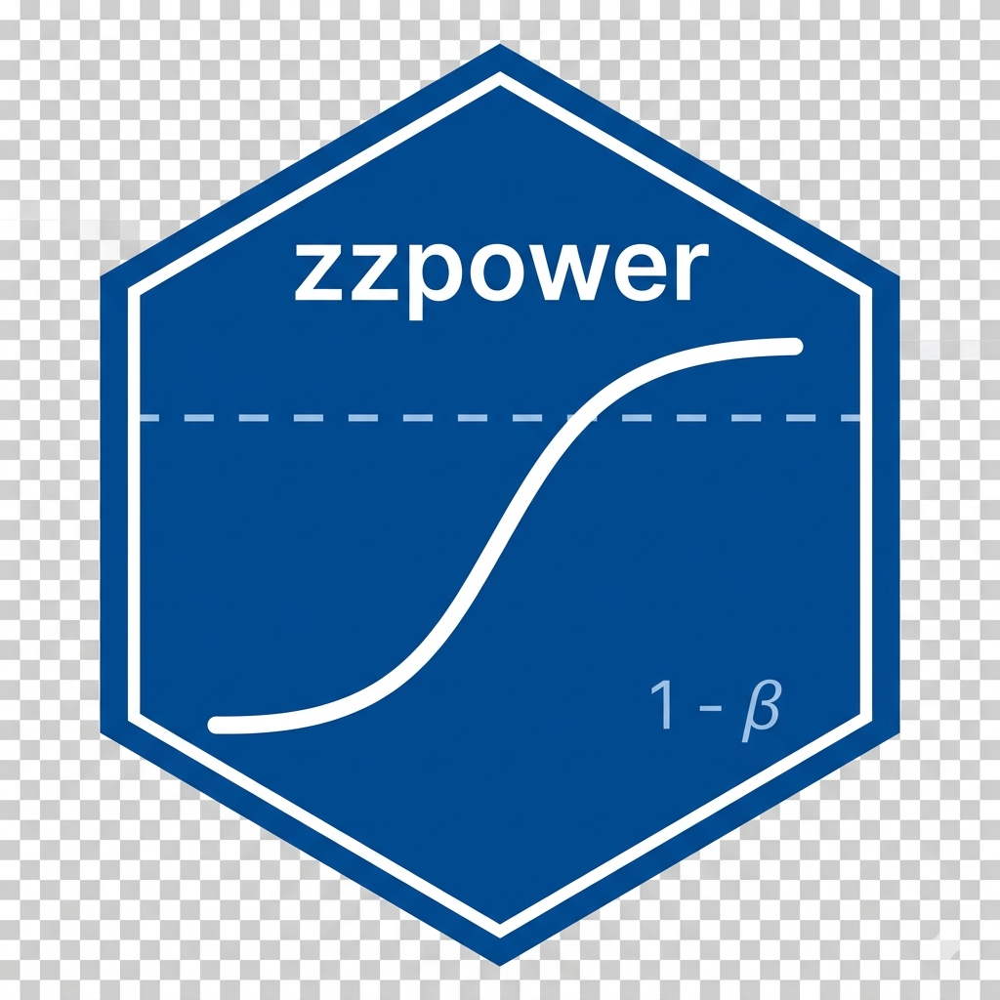

Create Module Server for a Power Analysis Test
Source:R/generic_server_factory.R
create_generic_test_server.RdRegisters all reactive expressions and output renderers for a single test tab via moduleServer(). Input IDs are automatically scoped by the module namespace.
Details
Every registered test exposes a Dropout Rate slider whose default is 10 the evaluable sample size, `n_enrolled * (1 - dropout)`, and reports enrolled N inflated for dropout. The rate in effect is stated in the downloadable text, HTML, PDF and Word reports, the sensitivity-table caption, the methods paragraph (when nonzero) and the reproducibility script. Move the slider to 0 to disable the adjustment.
Dropout adjustment
Every registered test applies an expected dropout rate, which defaults to 10 enrolled counts, and power is computed at the evaluable (analyzed) sample size, `n_evaluable = n_enrolled * (1 - dropout)`, applied per arm.
* Power mode (`sample_size` supplied): the achieved power is the power at `sample_size * (1 - dropout)` evaluable participants, so it is lower than the power that `pwr` reports for the same nominal N. For example, a two-sample t-test with 128 enrolled participants and d = 0.5 has power 0.758 under the default and 0.801 with `dropout = 0` (the `pwr::pwr.t2n.test()` value for 64 per arm). * Sample-size mode (`target_power` supplied): the solved N is the enrolled N, inflated so that the evaluable N reaches the target power.
Set `dropout = 0` to reproduce unadjusted textbook or `pwr` results. The rate actually applied is recorded in the returned object (`dropout`, `n_effective`, `n_enrolled`) and is stated in its print method, the methods paragraph, the reproducibility script and the downloadable reports. The exported engine helpers (`logrank_power()`, `mcnemar_power()`, `mixed_model_power()`, `trend_power()`) take the analyzed sample size directly and do not apply any dropout adjustment.